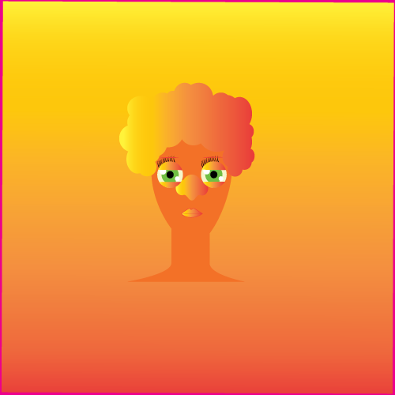

For my vector project, I created my character as myself. Of course it is not exactly who I am, it is a caricature of myself. I am mixed and I wanted my mixture and my culture to be seen through my project. The colors I choose are just the reflection of my inner self. Refining my character's look he changed the hair I made because my kinky hair is part of my identity and I wanted to enhance it through the project. The most challenging part of this project was to understand how to make the proper use of the tools I had to my disposition. Being the first time using this type of application it was a little bit hard to adapt myself and to understand how everything works. I am not saying I fully know hoa to use the application now, but what I know for sure is that my dedication helped me have a better control of the tools. Youtube also helped me.
